Sound workshop at Barcú
- Venue
- Barcú art fair, Bogotá
- Role
- Artist, workshop leader
- Technologies
- Drawdio, Arduino
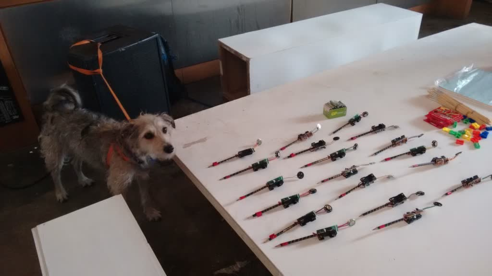
Playing with paint and electronic sounds at the Barcú art fair.
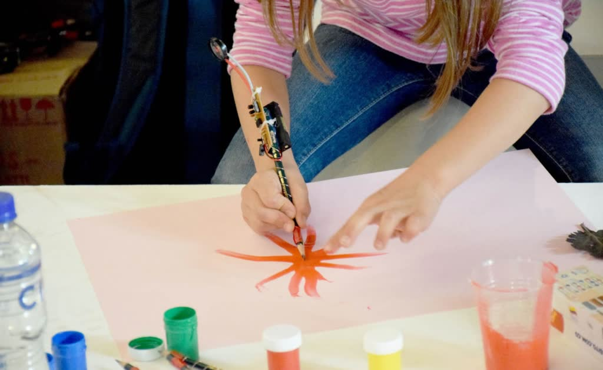
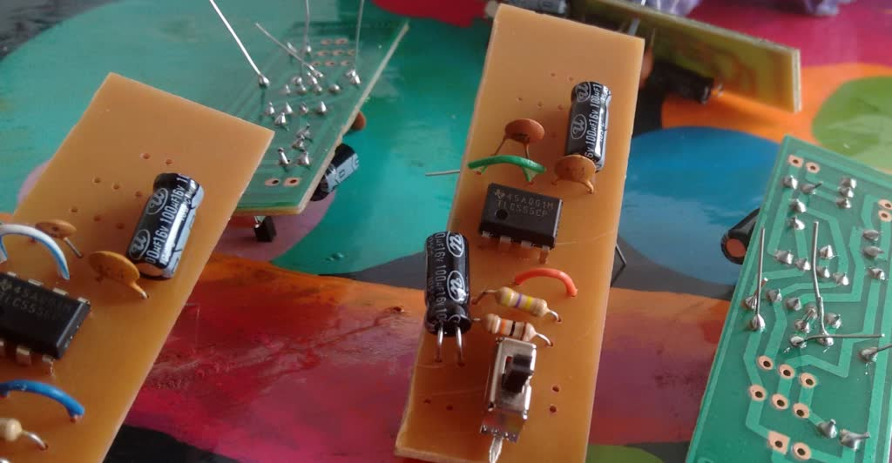
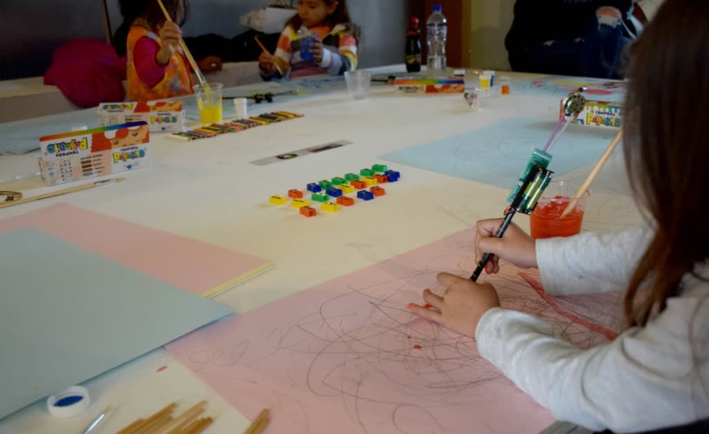
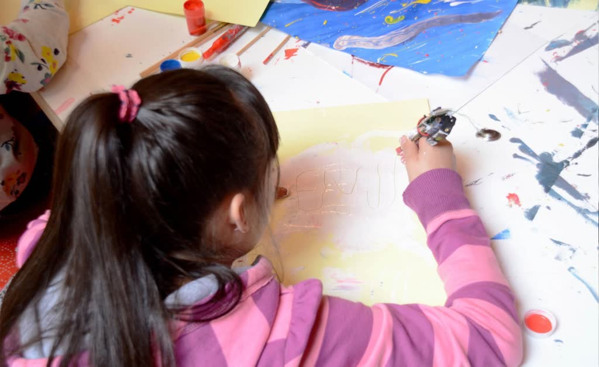
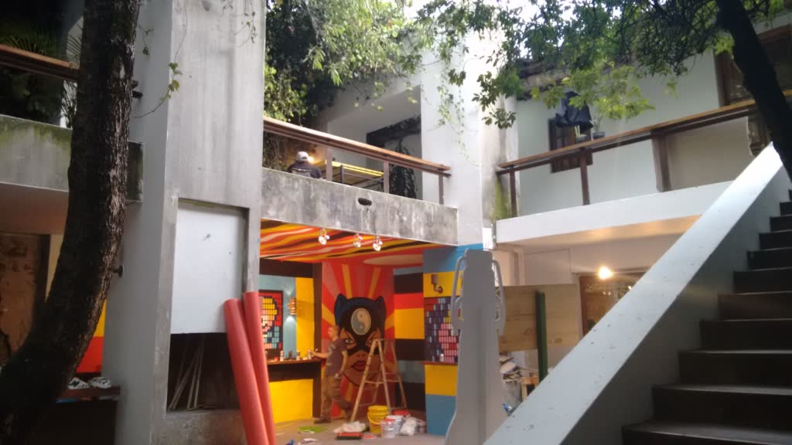
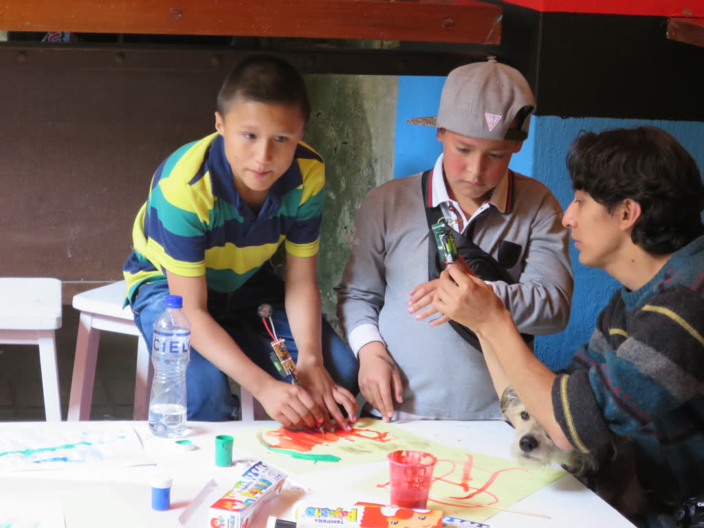
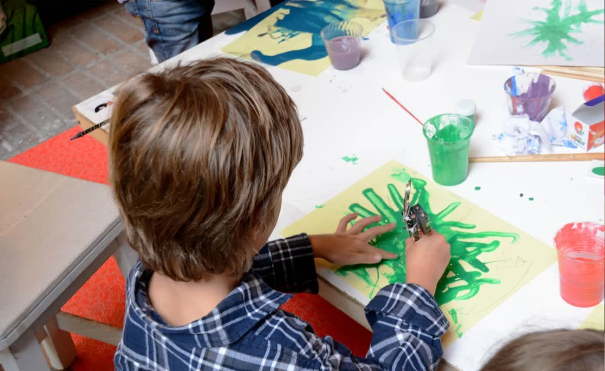
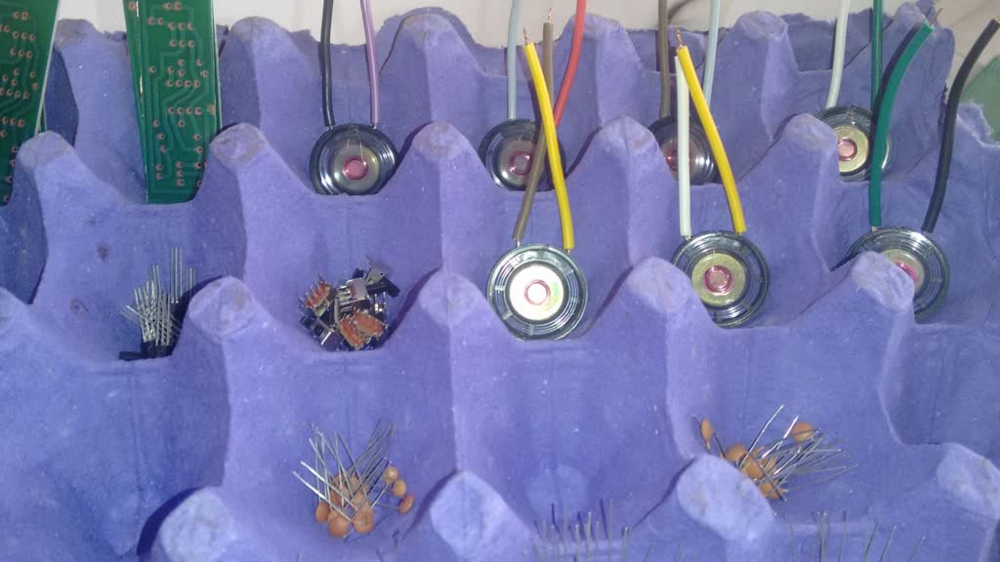
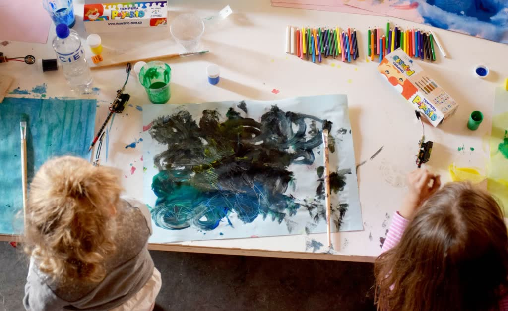
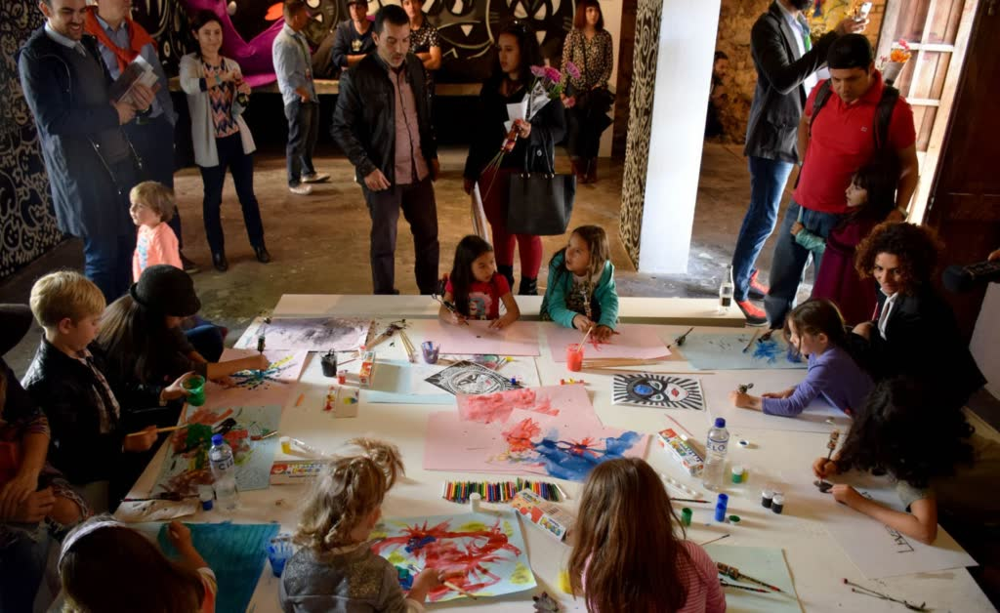
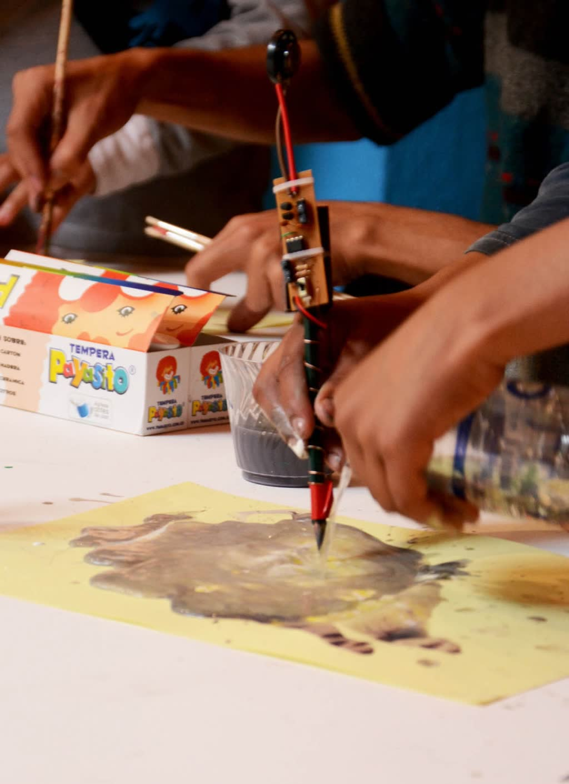
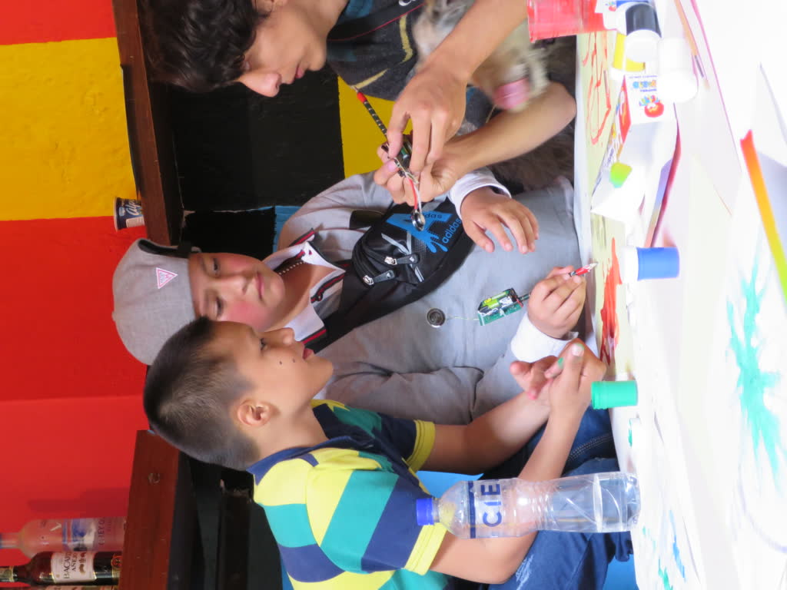
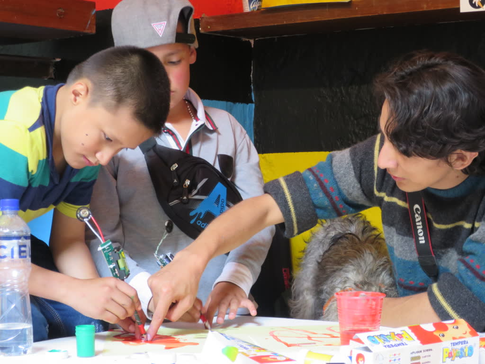
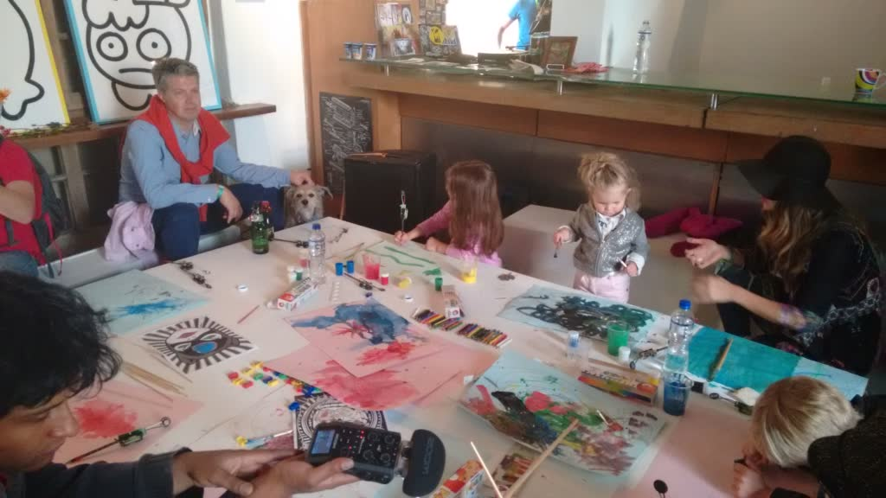